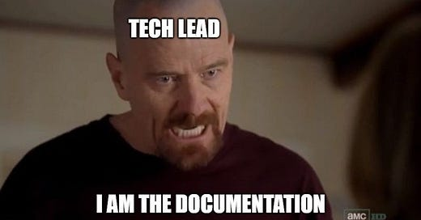

I’m a full-stack developer with a strong focus on backend development (Python, Django, FastAPI, and Flask). Over the years, I’ve worked with React, TypeScript, and Node.js, and have hands-on experience with infrastructure as code (Terraform, AWS CDK).
My experience spans multiple cloud platforms—Azure, AWS, GCP—and covers container orchestration (Kubernetes), serverless deployments (AWS Lambda, Google Cloud Run), plus event-driven architectures (EventBridge, various queue services). My expertise includes AWS resources like EC2 and AppSync. I’ve led teams and defined technical requirements to deliver robust solutions using Postgres, DynamoDB, and Firestore. Additionally, I design and build both web and offline desktop applications leveraging web technologies, backed by 7 years of professional experience.
It’s good to have a well-designed API… especially when your colleague is learning on production and you need to restore everything back to normal. 😅

Feel free to reach out anytime via the form below. I’ll respond as soon as possible!
Find me in social media